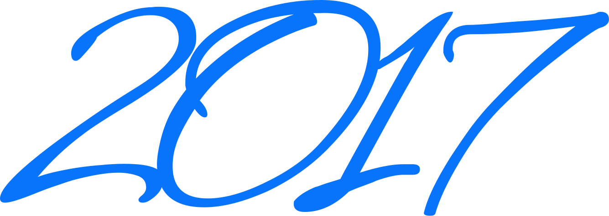

What
happened
We can't believe! it’s been a
DECADE since you joined Wix
What a journey it’s been!
It’s amazing to see how far we’ve
come in 10 years - and we couldn’t
have done it without you ♡
It’s amazing to
see how far we’ve
come in 10 years!
we couldn’t have done it without you
Reminder · 10 years ago today
2017